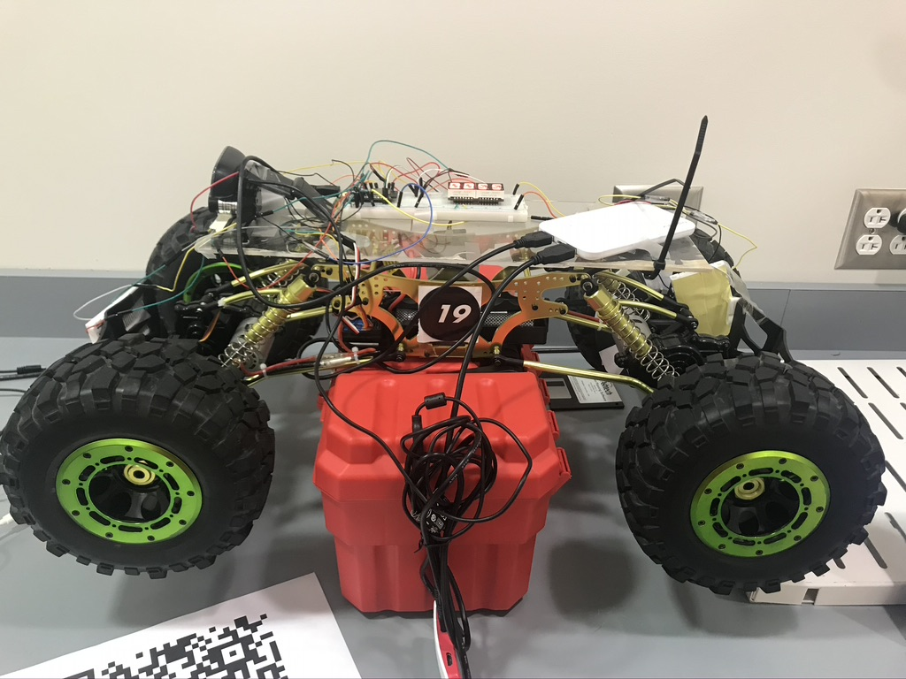
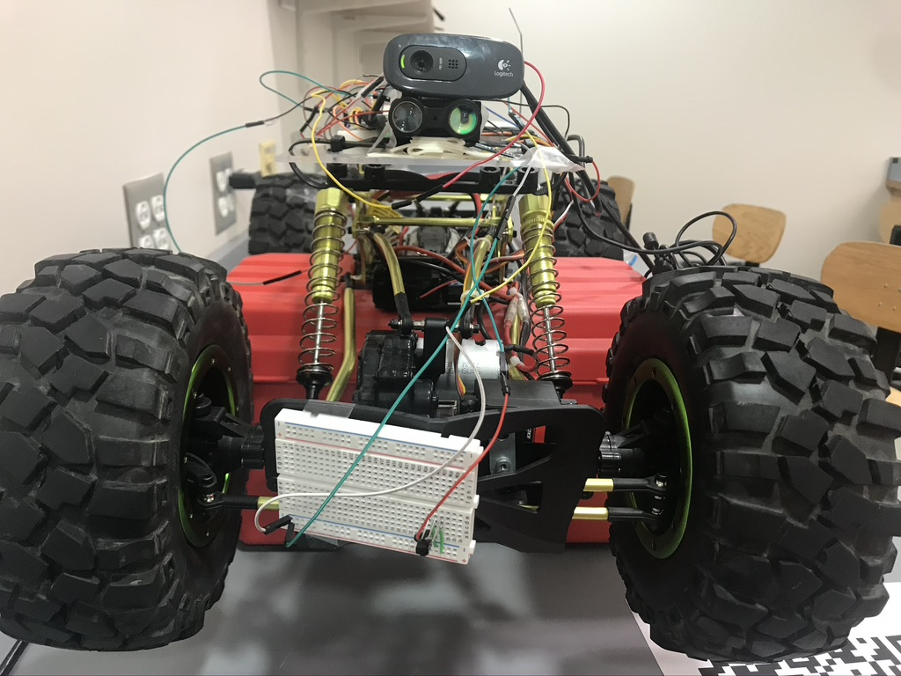

Autonumous-Driving Crawler
Overview
Designed and built a crawler that allows both autonomous and remote manual driving mode using ES32 microcontroller and Raspberry Pi.The crawler is able to drive autonomously through a course consist of straight and 90-degree turns.
 
A node server and a web client are hosted on the Raspberry Pi
where the user can drive the crawler manually and also see
live streaming from the webcam mounted on the crawler.
Detailed report can be found here.
Code can be found here.